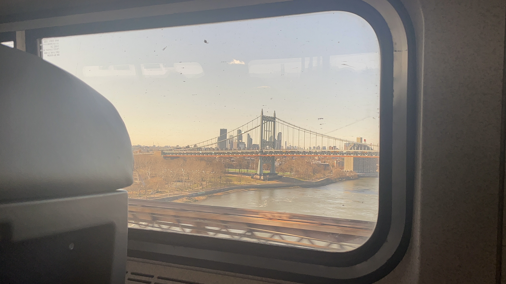
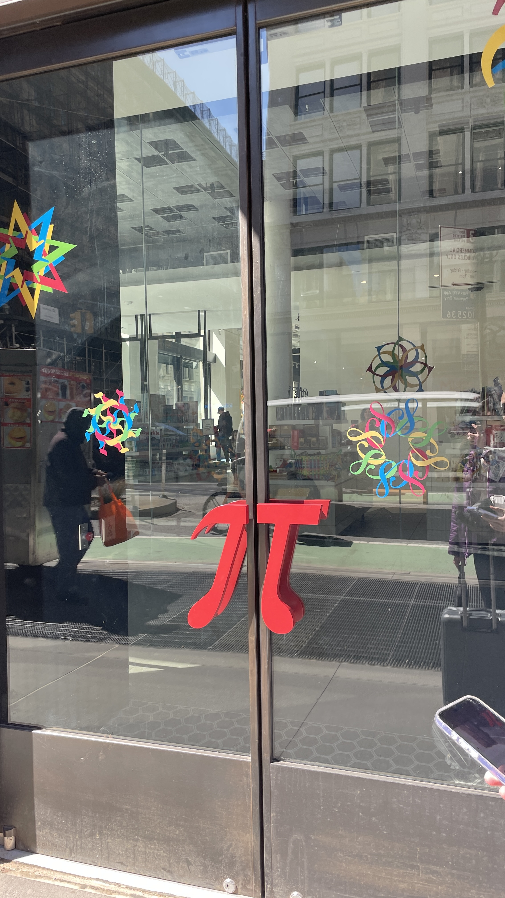
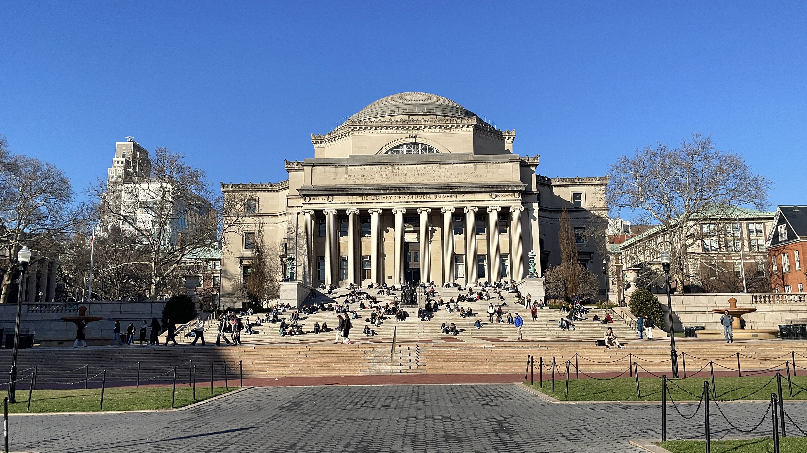
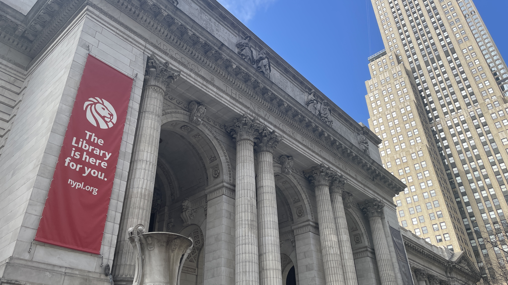
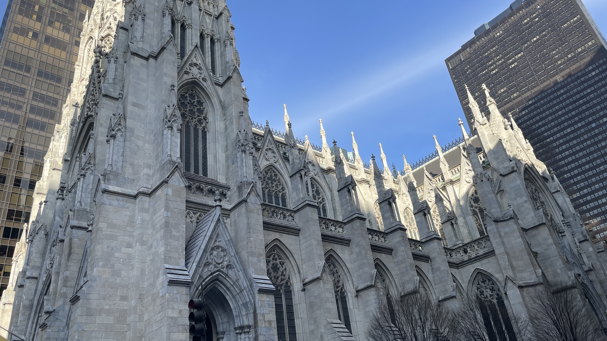
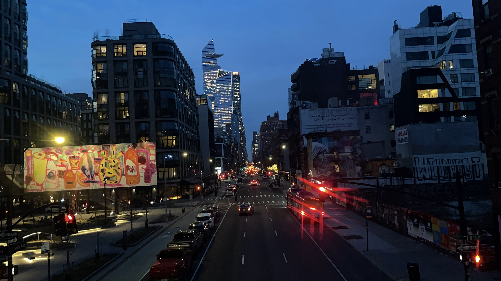
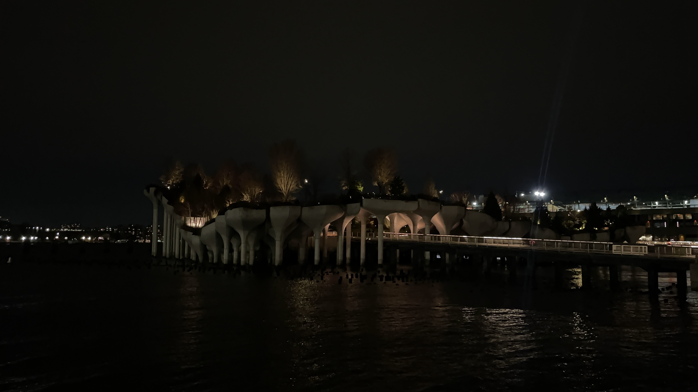
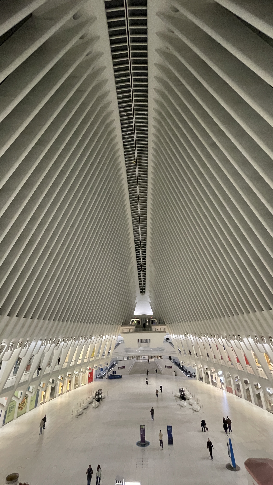
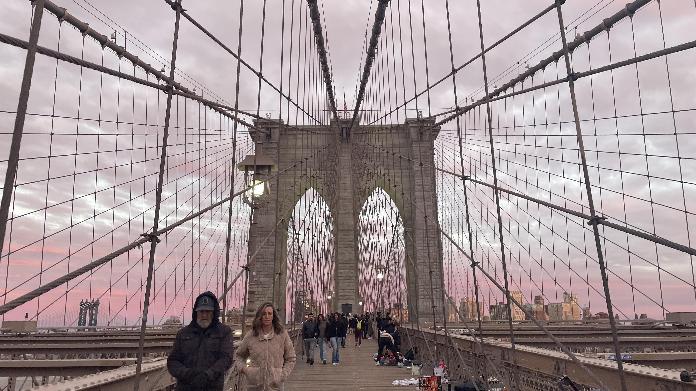

Memories in Manhattan
April 9, 2026
Over spring break, three friends and I visited New York!
We stayed in Newark, New Jersey, and primarily explored Manhattan. Well, that was our original plan, anyway.
I’ve never coordinated a trip with others before. When my family goes on vacation, all I need is enough competence to keep track of my belongings, follow my parents, and not get lost in crowds of people. Planning this trip (on top of surviving classes) was an entirely new task for me. I’ve never been to New York. I’ve never booked Airbnb or Amtrak tickets before. On top of that, I’ve never thought about how to consider everyone’s travel preferences.
But with a decently small group, I was optimistic! A friend and I would head there early, while the other two would join us later (they were visiting home for a bit first). On the first day, we got up at the glorious hour of 4 a.m. to catch our 6:10 a.m. Amtrak. I was running on less than four hours of sleep, but I insisted on staying awake on the Amtrak (and failed). However, I did catch a nice view of the city as we were entering it.

View out the window.
After settling down, we had a couple hours before we could check into the Airbnb. We wandered around New York Penn Station, the main hub connecting many of the subway lines in New York along with the lines traveling outside of New York. Afterward, we settled down for lunch, then went to the Museum of Mathematics — a spot that has been saved in my Google Maps for at least two years. We rode bikes with square wheels, played around with puzzles, and drove a car around a Möbius strip.

Entrance to the Museum of Mathematics! They had a fun pi door.
My friend went to meet up with his friend, who apparently secured tickets for the Daily Show. I went to Columbia University, because I enjoy seeing college campuses for some reason. Also, I wanted to see what the second best dome looked like.

Columbia's dome: does it beat MIT's?
I was carrying my friend’s suitcase and put my chargers inside so I didn’t have to lug everything around. At some point, my phone battery got down to 15%, so I really needed to access its charger. Unfortunately, I could not figure out how to unlock the zippers of the suitcase. After 20 minutes of brute force and panic texting, I decided to ask around for a charger. That’s when I really felt a difference between the Columbia and MIT communities. Maybe it was because I was obviously a guest and wasn’t as familiar with the place, but it was extremely difficult to talk to people. I feel that, at MIT, I could ask anyone, and they’d either happily lend me one or try their best to direct me to one. In other words, MIT felt a lot more welcoming to me.
But I also understand the cultural differences between the two institutions. Right when I got to Columbia University, I had to pass through security with a guest pass and a government ID. The security that had stemmed from the protests around two years ago was still present. I couldn’t access the interior of any building without a Columbia University student ID, which I did not have. So inherently, the space was closed off. Perhaps this made people more protective and reserved about their space and belongings.
Who knows — I was really tired and didn’t dwell on that much longer. I met up with my friend again at this hot pot and K-BBQ all-you-can-eat restaurant (yes, all of that at once). Afterward, we finally headed to our Airbnb in Newark.
Just when I thought the day was going to end, it was when we were about to board the train at New York Penn Station when I realized I didn’t have my wallet on me. After digging around in every possible spot I could think of, I was pretty convinced it was gone.
Looking back, I think it fell out as I was grabbing my large and unwieldy gloves out of my pocket. However, my friend hypothesized that I got pickpocketed. To this day, I still don’t know what happened, but we backtracked all the way back to the restaurant where I still had my wallet. Unfortunately, we could not find it anywhere, so at 12 a.m., we finally gave up and boarded a train to Newark.
Then, we spent another half hour waiting for a bus to take us from Newark Penn Station to our Airbnb. We finally arrived at 1 a.m., yapped for two hours, and finished our first day at 3 a.m.
On the second day, one of our other friends arrived! Once we met up, we immediately set off to Manhattan to try obtaining Broadway tickets for cheap. Afterward, we saw Grand Central Station before the last person in our group of four joined up with us. Then, we wanted to see the United Nations Headquarters, but I split off because I couldn’t go — a friend very kindly joined me as we saw the New York Public Library, St. Patrick’s Cathedral, Vessel, High Line, and Little Island. Oh, and Jane Street, because apparently it shares an intersection with Hudson Street, and




The other two friends saw The Great Gatsby on Broadway, then toured Times Square after visiting the United Nations Headquarters. Once we all gathered back at the Airbnb, we planned the next day.
We visited the American Museum of Natural History and spent most of our time there before boarding the Staten Island ferry, which not only has a decent view of the Statue of Liberty, but it’s also free. We caught it during sunset, which gave us beautiful views. It was clearly a commuter ferry though, because while we were in awe of the Statue of Liberty in the sunset, most people were just sitting inside on their phones.
Afterward, we ate at a really good noodle spot in Chinatown. My
We headed home through the One World Trade Center stop, which was definitely one of my favorite spots we passed through. Its interior looks like ribs, and it’s also really clean. It also has the PATH train, which is much cheaper than the New Jersey Transit train.

"Its interior looks like ribs."
We got through the whole day with almost no hiccups, but then we found out one of us lost their phone on the bus. We tracked its location, but it was in a random apartment. After trying to call many police departments, we finally decided the phone was probably gone for good, and we had it display a message with my throwaway email — which, mind you, I haven’t used since 5th grade and only previously used it for two-factor authentication for Roblox, of all things.
We didn’t expect anything, so we headed to Verizon the next morning to see if he could get a new phone. The deal he got was pretty bad, but this turned out to be a good thing because as we were headed into New York, I got a message in my throwaway email saying the phone was found. We headed all the way back to Newark to retrieve the phone. This entire detour ended up taking five hours, but we were pretty surprised we even heard anything about the phone. Afterwards, we headed back to New York, only starting to explore it at 6 p.m.
We sped through Central Park in 20 minutes before heading to the Brooklyn Bridge, sprinting to catch the sunset. We got there a little late, but it was still beautiful.

"We got there a little late, but it was still beautiful."
Afterward, we ate really good food in Chinatown again, got scuffed tanghulu, and played at a park for an hour because we’re college students.
For the final night, one of my other friends joined us, so we tried to fit five people into an Airbnb. It was peak college budgeting life.
Overall, I’m really glad we planned this trip! Despite the misfortunes, I’ve wanted to visit New York for a really long time, and I’m so happy I got to do it with friends. There’s still so much we didn’t get to explore in New York, but until then, I don’t know when I’ll visit the city again.
Onto the next adventure!
I wrote this article originally for The Tech, a student newspaper group at MIT! You may read this post here.
✩₊˚.⋆☾⋆⁺₊✧
That is all, consider subscribing or